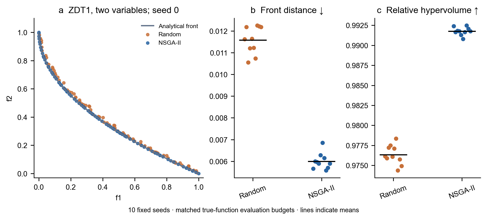
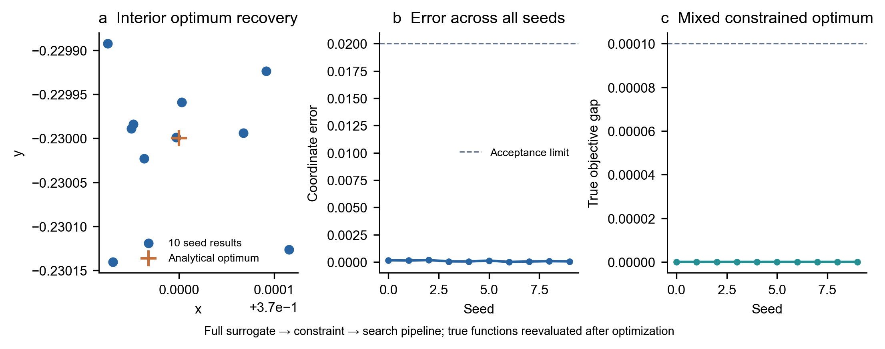

RESEARCH OPTIMIZATION WORKSPACE
从研究数据，
到可追溯的决策。
面向试验与仿真的代理模型研究平台。
定义问题、检验预测、搜索可行设计，在一套工作流中完成。
8 类代理模型约束 NSGA-II混合变量独立留出验证
无需安装或配置后端。首次计算需联网下载运行环境。
配置驱动变量 / 目标 / 工程约束
验证优先分组 / 时间 / 独立留出
结果可复现项目 / 参数 / 数据校验值
Pareto 设计空间预测候选
预测候选输入样本偏好推荐
图示为已计算的换热器合成函数预览；真实工程候选需要试验或仿真复核。
01 数据与问题定义→02 代理模型验证→03 约束 Pareto 搜索→04 决策与研究留档
可复用的问题定义
选择一个研究场景，开始验证。
以下均为合成函数示例，用于检查软件流程。自己的研究数据可在工作台直接导入。
RESEARCH WORKSPACE
研究工作台
配置、计算与证据集中查看。模型预测和输入表结果始终明确区分。
文件只在本地处理
合成示例预览
先看见，再进一步。
偏好推荐
预测候选与已有数据的可行 Pareto 分开查看。
MODEL VALIDATION
模型误差与泛化证据
交叉验证参与选型；独立留出检验冻结模型。合成函数的近零误差不代表真实物理精度。
预测与实测对照
折外预测残差与系统偏差
预测 − 实测折外 CV独立留出虚线：y = x / 残差 = 0图中至多绘制 2,000 点；指标使用完整检验记录。
候选模型比较
CV NRMSE · 越低越好逐响应验证指标
全部模型评估记录
独立留出检验
RESEARCH DIAGNOSTICS
约束、覆盖与研究稳健性
查看当前输入表的可行性、预测候选覆盖距离，以及不同种子和偏好下的方案。
候选样本覆盖距离
变量归一化距离距离仅反映训练样本覆盖程度，不是预测置信区间。
输入表约束与搜索域检查
数据清理记录
独立运行比较
等待计算固定训练尺度的偏好敏感性
比较等权、当前权重和单目标优先设置下的推荐方案；它衡量决策偏好变化，不是变量物理敏感性。
一行一个样本，一列一个变量或响应。
为保持页面流畅，表格预览最多显示 100 行；计算使用完整导入数据。
完整运行参数与校验值
规划下一轮研究
生成 30 个拉丁超立方设计点，另保留 3 个中心重复点。
预测候选是下一轮试验或仿真的起点。真实工程结论需要独立验证。MTPV/MTEG 专用物理耦合工作流目前保留在桌面版。
METHODS & REPRODUCIBILITY
从定义到结论，每一步有据可查。
优化问题：在样本支持的设计域内，最小化或最大化多个响应，并满足预先定义的约束。
问题与数据定义
连续、整数与数值集合变量；独立目标方向、单位和权重；辅助响应仅用于工程约束。
min / max fᵢ(x) · x ∈ 𝒟建模与验证划分
比较八类代理模型。根据数据结构选择随机、分组或时间前向验证，另用独立留出检验冻结模型。
CV → 选型 → 留出检验可行设计空间搜索
约束 NSGA-II 在边界框或样本凸包中搜索，支持混合变量投影与最近样本距离限制。
gⱼ(x) ≤ 0 · Pareto front决策与计算留档
IDEAL、TOPSIS 或 ARAS 排序；比较种子和偏好；保存完整输入、运行参数、库版本和数据校验值。
数据 + 配置 + 版本 → 复现方法边界
Auto 选型与 CV 报告共用验证折，并非嵌套验证。候选的约束判定基于代理预测；距离指标不等同于模型不确定性。最终工程结论需要独立试验或仿真确认。
VERIFICATION & BENCHMARKS
公开基准，支撑软件可行性。
解析前沿、已知最优解与合成案例复算，分别检查搜索、建模和跨领域工作流。
平均参考前沿 HV 比
等函数调用预算的随机搜索作为基线；仅检查二维搜索内核。
平均最优坐标误差
从完整代理模型工作流找回训练网格外的已知最优点。
原函数约束可行率
电池、换热器和结构候选逐一复算；不代表真实工程物理精度。


图表与三项数值来自已发布的桌面内核验证。网页版复用相同源码，另有真实浏览器工作流检查；实际运行依赖、验证划分和样本校验值写入每次导出配置。
带上你的数据。
导入 CSV、Excel 或记录列表 JSON。也可以打开桌面版 .optproj 项目，或体验合成示例。
定义你关心的目标。
选择变量类型与边界，设置各目标方向、辅助响应、约束和验证方式。
运行，比较，留存。
查看 Pareto 权衡和模型误差，导出候选、完整工作簿、图表与可恢复项目。
第一次计算、设备与数据说明
首次运行会从 Pyodide CDN 与 PyPI 下载计算环境，需要网络连接；计算与文件处理发生在浏览器内存中。推荐使用最新桌面版 Chrome、Edge、Firefox 或 Safari。关闭页面会结束计算，请及时下载项目。浏览器中树模型使用单线程，Auto 选型可能耗时较长。网站不自动调用 Fluent，也不导入二进制 .dat.h5 文件。